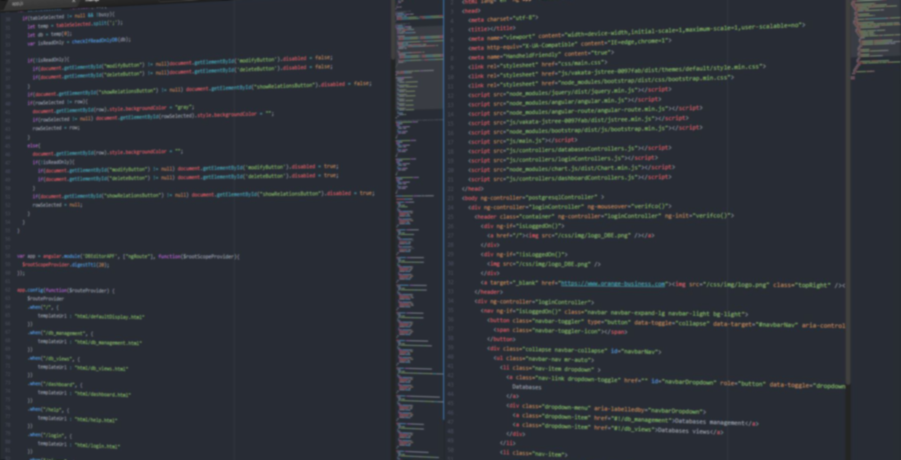
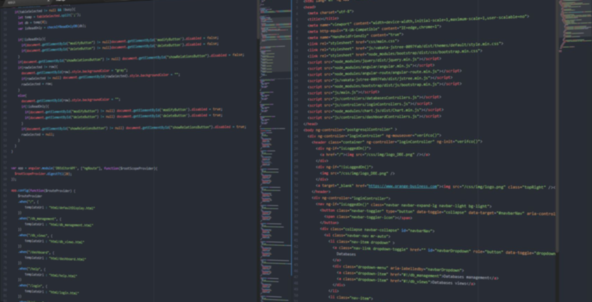

Bonjour, je suis
Aloïs Guitton
Etudiant en réseaux et télécommunications
Bonjour, je suis
Aloïs Guitton
Etudiant en réseaux et télécommunications
Je suis actuellement à la recherche d'une alternance (bac+3 à bac+5) de développeur Web ou de développeur Full-Stack. Je souhaite être admis dans une des écoles suivante :
Aujourd'hui
J'ai effectué ma première année d'étude supérieure (2017-2018) à l'IUT Réseaux et Télécommunications de Saint-Malo. J'ai suivi cette formation en alternance chez Orange Business Services auprès de l'entité FCPFC (Flexible Cloud Premium Service Center). Je poursuis cette formation et cette alternance pour cette seconde année d'étude supérieure(2018-2019).
Mon passé
Passionné d'informatique, j'ai monté mon premier PC à l'âge de 15 ans. En seconde, j'ai effectué un stage d'observation dans une start-up lors de mes vacances scolaires. J'y ai réalisé des tests de logiciel et de sites WEB. A ma demande, j'ai aussi pu effectuer plusieurs demi-journées d'observations dans différents services d'Orange. J'ai pu y découvrir les métiers de techniciens en centre de production, de technicien SAV ou encore d'expert cloud.